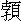

詩云：
曾聞陰德可回天，古往今來效灼然。
奉勸世人行好事，到頭原是自周全。
話說湖州府安吉州地浦灘有一居民，家道貧窘，因欠官糧銀二兩，監禁在獄。家中只有一妻，抱著個一周未滿的小兒子度日，別無門路可救。欄中畜養一豬，算計賣與客人，得價還官。因性急銀子要緊，等不得好價，見有人來買，即便成交。婦人家不認得銀子好歹，是個白晃晃的，說是還得官了。
客人既去，拿出來與銀匠鎔著錠子。銀匠說：「這是些假銀，要他怎麼？」婦人慌問：「有多少成色在裡頭？」銀匠道：「那裡有半毫銀氣？多是鉛銅錫鑞裝成，見火不得的。」婦人著了忙，拿在手中走回家來，尋思一回道：「家中並無所出，止有此豬，指望賣來救夫，今已被人騙去，眼見得丈夫出來不成。這是我不仔細上害了他，心下怎麼過得去？我也不要這性命了！」待尋個自盡，看看小兒子，又不捨得，發個狠道：「罷！罷！索性抱了小冤家，同赴水而死，也免得牽掛。」
急急奔到河邊來，正待攛下去，恰好一個徽州商人立在那裡，見他忙忙投水，一把扯住，問道：「清白後生，為何做此短見勾當？」婦人拭淚答道：「事急無奈，只圖一死。」因將救夫賣豬，誤收假銀之說，一一告訴。徽商道：「既然如此，與小兒子何干？」婦人道：「沒爹沒娘，少不得一死，不如同死了乾淨。」徽商惻然道：「所欠官銀幾何？」婦人道：「二兩。」徽商道：「能得多少，壞此三條性命！我下處不遠，快隨我來，我捨銀二兩，與你還官罷。」
婦人轉悲作喜，抱了兒子，隨著徽商行去。不上半里，已到下處。徽商走入房，秤銀二兩出來，遞與婦人道：「銀是足紋，正好還官，不要又被別人騙了。」
婦人千恩萬謝轉去，央個鄰舍同到縣裡，納了官銀，其夫始得放出監來。到了家裡問起道：「那得這銀子還官救我？」婦人將前情述了一遍，說道：「若非遇此恩人，不要說你不得出來，我母子兩人已作黃泉之鬼了。」其夫半喜半疑，喜的是得銀解救，全了三命；疑的是婦人家沒志行，敢怕獨自個一時喉極了，做下了些不伶俐的勾當，方得這項銀子也不可知。不然怎生有此等好人，直如此湊巧！口中不說破他，心生一計道：「要見明白，須得如此如此。」問婦人道：「你可認得那恩人的住處麼？」婦人道：「隨他去秤銀的，怎不認得？」其夫道：「既如此，我與你不可不去謝他一謝。」婦人道：「正該如此。今日安息了，明日同去。」其夫道：「等不得明日，今夜就去。」婦人道：「為何不要白日裡去，到要夜間？」其夫道：「我自有主意，你不要管我！」
婦人不好抝得，只得點著燈，同其夫走到徽商下處門首。此時已是黃昏時候，人多歇息寂靜了。其夫叫婦人扣門，婦人道：「我是女人，如何叫我黑夜敲人門戶？」其夫道：「我正要黑夜試他的心事。」婦人心下曉得丈夫有疑了，想到一個有恩義的人，到如此猜他，也不當人子！卻是恐怕丈夫生疑，只得出聲高叫。
徽商在睡夢間，聽得是婦人聲音，問道：「你是何人，卻來叫我？」婦人道：「我是前日投水的婦人。因蒙恩人大德，救了吾夫出獄，故此特來踵門叩謝。」看官，你道徽商此時若是個不老成的，聽見一個婦女黑夜尋他，又是施恩過來的，一時動了不良之心，未免說句把綽俏綽趣的話，開出門來撞見其夫，可不是老大一場沒趣，把起初做好事的念頭多弄髒了？
不想這個朝奉煞是有正經，聽得婦人說話，便厲聲道：「此我獨臥之所，豈汝婦女家所當來！況昏夜也不是謝人的時節，但請回步，不必謝了。」其夫聽罷，才把一天疑心盡多消散。婦人乃答道：「吾夫同在此相謝。」
徽商聽見其夫同來，只得披衣下床，要來開門。走得幾步，只聽得天崩地塌之聲，連門外多震得動。徽商慌了自不必說，夫婦兩人多吃了一驚。徽商忙叫小二掌火來看，只見一張臥床壓得四腳多折，滿床盡是磚頭泥土。原來那一垛牆走了，一向床遮著不覺得，此時偶然坍將下來。若有人在床時，便是銅筋鐵骨也壓死了。徽商看了，伸了舌頭出來，一時縮不進去。就叫小二開門，見了夫婦二人，反謝道：「若非賢夫婦相叫起身，幾乎一命難存！」夫婦兩人看見牆坍牀倒，也自大加驚異，道：「此乃恩人洪福齊天，大難得免，莫非恩人陰德之報？」兩相稱謝。徽商留夫婦茶話少時，珍重而別。只此一件，可見商人二兩銀子，救了母子兩命，到底因他來謝，脫了牆壓之厄，仍舊是自家救了自家性命一般，此乃上天巧於報德處。所以古人說：「與人方便，自己方便。」
小子起初說「到頭原是自周全」，並非誑語。看官每不信，小子而今單表一個周全他人，仍舊周全了自己一段長話，作個正文。有詩為證：
有女顏如玉，酬德詎能足。
遇彼素心人，清操同秉燭。
蘭蕙保幽芳，移來貯金屋。
容臺粉署郎，一朝畀掾屬。
聖明重義人，報施同轉轂。
這段話文，出在弘治年間，直隸太倉州地方。州中有一個吏典，姓顧名芳。平日迎送官府出域，專在城外一個賣餅的江家做下處歇腳。那江老兒名溶，是個老實忠厚的人，生意儘好，家道將就過得。看見顧吏典舉動端方，容儀俊偉，不像個衙門中以下人，私心敬愛他。每遇他到家，便以「提控」呼之，待如上賓。江家有個嬤嬤，生得個女兒，名喚愛娘，年方十七歲，容貌非凡。顧吏典家裡也自有妻子，便與江家內裡通往來，竟成了一家骨肉一般。常言道：「一家飽暖千家怨」，江老雖不怎的富，別人看見他生意從容，衣食不缺，便傳說了千金、幾百金家事。有那等眼光淺，心不足的，目中就著不得，不由得不妒忌起來。
忽一日江老正在家裡做活，只見如狼似虎一起捕人，打將進來，喝道：「拿海賊！」把店中家火打得粉碎。江老出來分辨，眾捕一齊動手，一索子綑倒。江嬤嬤與女兒顧不得羞恥，大家啼啼哭哭嚷將出來，問道：「是何事端？說個明白。」捕人道：「崇明解到海賊一起，有江溶名字，是個窩家，還問什麼事端！」江老夫妻與女兒叫起撞天屈來，說道：「自來不曾出外，那裡認得什麼海賊？卻不屈殺了平人！」捕人道：「不管屈不屈，到州裡分辨去，與我們無干。快些打發我們見官去！」
江老是個鄉子裡人，也不曉得盜情利害，也不曉得該怎的打發公差，合家只是一味哭。捕人每不見動靜，便發起狠來道：「老兒奸詐，家裡必有贓物，我們且搜一搜！」眾人不管好歹，打進內裡一齊動手，險些把地皮多翻了轉來，見了細軟便藏匿了。江老夫妻、女兒三口，殺豬也似的叫喊，擂天倒地價哭。捕人每揎拳裸手，耀武揚威。
正在沒擺佈處，只見一個人踱將進來，喝道：「有我在此，不得無理！」眾人定睛看時，不是別人，卻是州裡顧提控。大家住手道：「提控來得正好，我們不要粗魯，但憑提控便是。」江老一把扯住提控道：「提控，救我一救！」顧提控問道：「怎的起？」捕人拿牌票出來看，卻是海賊指扳窩家，巡捕衙裡來拿的。提控道：「賊指的事，多出仇口。此家良善，明是冤屈。你們為我面上，須要周全一分。」捕人道：「提控在此，誰敢多話？只要分付我們，一面打點見官便是。」
提控即便主張江老支持酒飯魚肉之類，擺了滿桌，任他每狼餐虎嚥吃個盡情。又摸出幾兩銀子做差使錢，眾捕人道：「提控分付，我每也不好推辭，也不好較量，權且收著。凡百看提控面上，不難為他便了。」提控道：「列位別無幫襯處，只求遲帶到一日。等我先見官人替他分訴一番，做個道理，然後投牌，便是列位盛情。」捕人道：「這個當得奉承。」當下江老隨捕人去了，提控轉身安慰他母子道：「此事只要破費，須有分辨處，不妨大事。」母子啼哭道：「全仗提控搭救則個。」提控道：「且關好店門，安心坐著，我自做道理去。」
出了店門，進城來，一逕到州前來見捕盜廳官人，道：「顧某有個下處主人江溶，是個良善人戶。今被海賊所扳，想必是仇家陷害。望乞爺臺為顧某薄面周全則個。」捕官道：「此乃堂上公事，我也不好自專。」提控道：「堂上老爺，顧某自當稟明，只望爺台這裡帶到時，寬他這一番拷究。」捕官道：「這個當得奉命。」
須臾，知州升堂，顧提控覷個堂事空便，跪下稟道：「吏典平日伏侍老爺，並不敢有私情冒稟。今日有個下處主人江溶，被海賊誣扳。吏典熟知他是良善人戶，必是仇家所陷，故此斗膽稟明。望老爺天鑒之下，超豁無辜。若是吏典虛言妄稟，罪該萬死。」知州道：「盜賊之事，非同小可。你敢是私下受人買囑，替人講解麼？」提控叩頭道：「吏典若有此等情弊，老爺日後必然知道，吏典情願受罪。」知州道：「待我細審，也聽不得你一面之詞。」提控道：「老爺『細審』二字，便是無辜超生之路了。」復叩一頭，走了下來。想道：「官人方才說聽不得一面之詞，我想人眾則公，明日約同同衙門幾位朋友，大家稟一聲，必然聽信。」是日拉請一般的十數個提控到酒館中坐一坐，把前事說了，求眾人明日幫他一說。眾人平日與顧提控多有往來，無有不依的。
次日，捕人已將江溶解到捕廳，捕廳因顧提控面上，不動刑法，竟送到堂上來。正值知州投文換牌，唱名點到江溶名字。顧提控站在旁邊，又跪下來稟道：「這江溶即是小吏典昨日所稟過的，果是良善人戶。中間必有冤情，望老爺詳察。」知州作色道：「你兩次三回替人辨白，莫非受了賄賂，故敢大膽？」提控叩頭道：「老爺當堂明查，若是小吏典下處主人及有賄賂情弊，打死無怨！」只見眾吏典多跪下來，稟道：「委是顧某主人，別無情弊，眾吏典敢百口代保。」知州平日也曉得顧芳行徑，是個忠直小心的人，心下有幾分信他的，說道：「我審時自有道理。」便問江溶：「這夥賊人扳你，你平日曾認得一兩個否？」江老兒叩頭道：「爺爺，小的若認得一人，死也甘心。」知州道：「他們有人認得你否？」江老兒道：「這個小的雖不知，想來也未必認得小的。」知州道：「這個不難。」喚一個皁隸過來，教他脫下衣服與江溶穿了，扮做了皁隸。卻叫皁隸穿了江溶的衣服，扮做了江溶。分付道：「等強盜執著江溶時，你可替他折證，看他認得認不得？」皁隸依言與江溶更換停當，然後帶出監犯來。
知州問賊首道：「江溶是你窩家麼？」賊首道：「爺爺，正是。」知州敲著氣拍，故意問道：「江溶怎麼說？」這個皁隸扮的江溶，假著口氣道：「爺爺，並不干小人之事。」賊首看著假江溶，那裡曉得不是，一口指著道：「他住在城外，倚著賣餅為名。專一窩著我每贓物，怎生賴得？」皁隸道：「爺爺，冤枉！小的不曾認得他的。」賊首道：「怎生不認得？我們長在你家吃餅，某處贓若干，某處贓若干，多在你家，難道忘了？」知州明知不是，假意說道：「江溶是窩家，不必說了，卻是天下有名姓相同。」一手指著真江溶扮皁隸的道：「我這個皁隸，也叫得江溶，敢怕是他麼？」賊首把皁隸一看，那裡認得？連喊道：「爺爺，是賣餅的江溶，不是皁隸的江溶。」
知州又手指假江溶道：「這個賣餅的江溶，可是了麼？」賊首道：「正是。」這個知州冷笑一聲，連敲氣拍兩三下，指著賊首道：「你這殺剮不盡的奴才！自做了歹事，又受人買囑，扳陷良善。」賊首連喊道：「這江溶果是窩家，一些不差，爺爺！」知州喝叫：「掌嘴！」打了十來下。知州道：「還要嘴強，早是我先換過了，試驗虛實，險些兒屈陷平民。這個是我皁隸周才，你卻認做了江溶，就信口扳殺他，這個扮皁隸的，正是賣餅江溶，你卻又不認得，就說道無干。可知道你受人買囑來害江溶，原不曾認得江溶的麼！」賊首低頭無語，只叫：「小的該死！」
知州叫江溶與皁隸仍舊換過了衣服。取夾棍來，把賊首夾起，要招出買他指扳的人來。賊首是頑皮賴肉，那裡放在心上？任你夾打，只供稱是因見江溶殷實，指望扳賠贓物是實，別無指使。知州道：「眼見得是江溶仇家所使，無得可疑。今這奴才死不肯招，若必求其人，他又要信口誣害，反生株連。我只釋放了江溶，不根究也罷。」江溶叩頭道：「小的也不願曉得害小的的仇人，省得中心不忘，冤冤相結。」知州道：「果然是個忠厚人。」提起筆來，把名字註銷，喝道：「江溶無干，直趕出去！」當下江溶叩頭不止，皁隸連喝：「快走！」
江溶如籠中放出飛鳥，歡天喜地出了衙門，衙門裡許多人撮空叫喜，擁住了不放。又虧得顧提控走出來，把幾句話解散開了眾人，一同江溶走回家來。江老兒一進門，便喚過妻女來道：「快來拜謝恩人！這番若非提控搭救，險些兒相見不成了。」三個人拜做一堆。提控道：「自家家裡，應得出力。況且是知州老爺神明做主，與我無干，快不要如此！」江嬤嬤便問老兒道：「怎麼回來得這樣撇脫，不曾吃虧麼？」江老兒道：「兩處俱仗提控先說過了，並不動一些刑法。天字號一場官司，今沒一些干涉，竟自平淨了。」江嬤嬤千恩萬謝。提控立起身來道：「你們且慢細講，我還要到衙門去謝謝官府去。」當下提控作別自去了。
江老送了出門，回來對嬤嬤說：「正是閉門家裡坐，禍從天上來。誰想遭此一場飛來橫禍，若非提控出力，性命難保。今雖然破費了些東西，幸得太平無事。我每不可忘恩德，怎生酬報得他便好？」嬤嬤道：「我家家事向來不見怎的，只好度日。不知那裡動了人眼，被天殺的暗，招此非災。前日眾捕人一番擄掠，狼如打劫一般，細軟東西儘被抄扎過了，今日有何重物謝得提控大恩？」江老道：「便是沒東西難處，就湊得些少也當不得數，他也未必肯受，怎麼好？」嬤嬤道：「我到有句話商量，女兒年一十七歲，未曾許人。我們這樣人家，就許了人，不過是村莊人口。不若送與他做了妾，扳他做個婦婿，支持門戶，也免得外人欺侮。可不好？」
江老道：「此事倒也好，只不知女兒肯不肯？」嬤嬤道：「提控又青年，他家大娘子又賢惠，平日極是與我女兒說得來的，敢怕也情願。」遂喚女兒來，把此意說了。女兒道：「此乃爹娘要報恩德，女兒何惜此身？」江老道：「雖然如此，提控是個近道理的人，若與他明說，必是不從。不若你我三人，只作登門拜謝，以後就留下女兒在彼，他便不好推辭得。」嬤嬤道：「言之有理。」當下三人計議已定，拿本曆日來看，來日上吉。
次日起早，把女兒裝扮了。江老夫妻兩個步行，女兒乘著小轎，擡進城中，竟到顧家來。提控夫妻接了進去，問道：「何事光降？」江老道：「老漢承提控活命之恩，今日同妻女三口登門拜謝。」提控夫妻道：「有何大事，直得如此！且勞煩小娘子過來，一發不當。」江老道：「老漢有一句不知進退的話奉告，老漢前日若是受了非刑，死於獄底，留下妻女，不知流落到甚處？今幸得提控救命重生，無恩可報。止有小女愛娘，今年正十七歲，與老妻商議，送來與提控娘子鋪牀疊被，做個箕箒之妾。提控若不棄嫌麄醜，就此俯留，老漢夫妻終身有托。今日是個吉日，一來到此拜謝，二來特送小女上門。」
提控聽罷，正色道：「老丈說那裡話！顧某若做此事，天地不容。」提控娘子道：「難得老伯伯、乾娘、妹妹一同到此，且請過小飯，有話再說。」提控一面分付廚下擺飯相待。飲酒中間，江老又把前話提起，出位拜提控一拜道：「提控若不受老漢之托，老漢死不瞑目。」提控情知江老心切，暗自想道：「若不權且應承，此老心不肯住，又去別尋事端謝我，反多事了。且依著他言語，我日後自有處置。」飯罷，江老夫妻起身作別，分付女兒留住，道：「你在此伏侍大娘。」愛娘含羞忍淚，應了一聲。提控道：「休要如此說！荊妻且權留小娘子盤桓幾日，自當送還。」江老夫妻也道是他一時門面說話，兩下心照罷了。
兩口兒去得，提控娘子便請愛娘到裡面自己房裡坐了，又擺出細果茶品請他，分付走使丫鬟鋪設好一間小房，一床被臥。連提控娘子心裡，也只道提控有意留住的，今夜必然趁好日同宿。他本是個大賢惠不撚酸的人，又平日喜歡著愛娘，故此是件周全停當，只等提控到晚受用。正是：
一朵鮮花好護持，芳菲只待賞花時。
等閒未動東君意，惜處重將帷幙施。
誰想提控是夜竟到自家娘子房裡來睡了，不到愛娘處去。提控娘子問道：「你為何不到江小娘那裡去宿？莫要忌我。」提控道：「他家不幸遭難，我為平日往來，出力救他。今他把女兒謝我，我若貪了女色，是乘人危處，遂我欲心。與那海賊指扳，應捕搶擄肚腸有何兩樣？顧某雖是小小前程，若壞了行止，永遠不吉。」
提控娘子見他說出咒來，知是真心。便道：「果然如此，也是你的好處。只是日間何不力辭脫了，反又留在家中做甚？」提控道：「江老兒是老實人，若我不允女兒之事，他又剜肉做瘡，別尋道路謝我，反為不美。他女兒平日與你相愛，通家姊妹，留下你處住幾日，這卻無妨。我意欲就此看個中意的人家子弟，替他尋下一頭親事，成就他終身結果，也是好事。所以一時不辭他去，原非我自家有意也。」提控娘子道：「如此卻好。」當夜無詞。
自此江愛娘只在顧家住，提控娘子與他如同親姐妹一般，甚是看待得好。他心中也時常打點提控到他房裡的，怎知道：
落花有意隨流水，流水無情戀落花。
直待他年榮貴後，方知今日不為差。
提控只如常相處，並不曾起一毫邪念，說一句戲語。連愛娘房裡，腳也不屣進去一步。愛娘初時疑惑，後來也不以為怪了。
提控衙門事多，時常不在家裡。匆匆過了一月有餘，忽一日得閒在家中，對娘子道：「江小娘在家，初意要替他尋個人家，急切裡湊不著巧。而今一月多了，久留在此，也覺不便。不如備下些禮物，送還他家。他家父母必然問起女兒相處情形，他曉得我心事如此，自然不來強我了。」提控娘子道：「說得有理。」當下把此意與江愛娘說明了。就備了六個盒盤，又將出珠花四朵，金耳環一雙，送與江愛娘插戴好。一乘轎著個從人逕送到江老家裡來。
江老夫妻接著轎子，曉得是顧家送女兒回家，心裡疑道：「為何叫他獨自個歸來？」問道：「提控在家麼？」從人道：「提控不得工夫來，多多拜上阿爹，這幾時有慢了小娘子，今特送還府上。」江老見說話蹺蹊，反懷著一肚子鬼胎道：「敢怕有甚不恰當處。」忙領女兒到裡邊坐了，同嬤嬤細問他這一月的光景。
愛娘把顧娘子相待甚厚，並提控不進房，不近身的事，說了一遍。江老呆了一晌道：「長要來問個信，自從為事之後，生意淡薄，窮忙沒有工夫，又是素手，不好上門。欲待央個人來，急切裡沒便處。只道你一家和睦，無些別話，誰想卻如此行徑，這怎麼說？」嬤嬤道：「敢是日子不好，與女兒無緣法，得個人解禳解禳便好。」江老道：「且等另揀個日子，再送去又做處。」
愛娘道：「據女兒看起來，這顧提控不是貪財好色之人，乃是正人君子。我家強要謝他，他不好推辭得，故此權留這幾時，誓不玷污我身。今既送了歸家，自不必再送去。」江老道：「雖然如此，他的恩德畢竟不曾報得，反住在他家打攪多時，又加添禮物送來，難道便是這樣罷了？還是改日再送去的是。」愛娘也不好阻當，只得憑著父母說罷了。
過了兩日，江老夫妻做了些餅食，買了幾件新鮮物事，辦著十來個盒盤，一罈泉酒，僱個擔夫挑了，又是一乘轎抬了女兒。留下嬤嬤看家，江老自家伴送過顧家。提控迎著江老，江老道其來意，提控作色道：「老丈難道不曾問及令愛來？顧某心事，唯天可表，老丈何不見諒如此？此番決不敢相留，盛惠謹領。令愛不及款接，原轎請回。改日登門拜謝！」江老見提控詞色嚴正，方知女兒不是誑語。連忙出門止住來轎，叫他仍舊抬回家去。提控留江老轉去茶飯，江老也再三辭謝，不敢叨領，當時別去。
提控轉來，受了禮物，出了盒盤，打發了腳擔錢，分付多謝去了。進房對娘子說江老今日復來之意。娘子道：「這個便老沒正經，難道前番不諧，今番有再諧之理？只是難為了愛娘，又來一番，不曾會得一會去。」提控道：「若等他下了轎，接了進來，又多一番事了，不如決絕回頭了的是。這老兒真誠，卻不見機。既如此把女兒相纏，此後往來到也要稀疏了些。外人不知就裡，惹得造下議論來，反害了女兒終身，是要好成歉了。」娘子道：「說得極是。」自此提控家不似前日十分與江家往來得密了。
那江家原無甚麼大根基，不過生意濟楚，自經此一番橫事剝削之後，家計蕭條下來。自古道：「人家天做」。運來時，撞著就是趁錢的，火燄也似長起來；運退時，撞著就是折本的，潮水也似退下去。江家悔氣頭裡，連五熱行裡生意多不濟了。做下餅食，常管五七日不發市，就是餿蒸氣了，餵豬狗也不中。
你道為何如此？先前為事時不多幾日，只因驚怕了。自女兒到顧家去後，關了一個月多店門不開，主顧家多生疏，改向別家去，就便抝不轉來。況且窩盜為事，聲名揚開去不好聽，別人不管好歹，信以為實，就怕來纏帳。以此生意冷落，日吃月空，漸漸支持不來。要把女兒嫁個人家，思量靠他過下半世，又高不湊、低不就。光陰眨眼，一錯就是論年，女兒也大得過期了。
忽一日，一個徽州商人經過，偶而回瞥，見愛娘顏色。訪問鄰人，曉得是賣餅江家。因問可肯與人家為妾否，鄰人道：「往年為官事時，曾送與人做妾。那家行善事，不肯受還了的。做妾的事，只怕他肯。」徽商聽得此話，去央個熟事的媒婆到江家來說此親事，只要事成，不惜重價。媒婆得了口氣，走到江家便說出徽商許多富厚處。情願出重禮，聘小娘子為偏房。
江老夫妻正在喉急頭上，見說得動火，便問道：「討在何處去的？」媒婆道：「這個朝奉只在揚州開當中，大孺人自在徽州家裡。今討去做二孺人，住在揚州當中，是兩頭大的，好不受用！亦且路不多遠。」江老夫妻道：「肯出多少禮？」媒婆道：「說過只要事成，不惜重價。你每能要得多少，那富家心性，料必勾你每心下的，憑你每討禮罷了。」
江老夫妻商量道：「你我心下不割捨得女兒，欲待留下他，遇不著這樣好主。有心得把與別處人去，多討得些禮錢，也勾下半世做生意度日方可。是必要他三百兩，不可少了。」商量已定，對媒婆說過。媒婆道：「三百兩，忒重些。」江嬤嬤道：「少一釐，我也不肯。」媒婆道：「且替你們說說看，只要事成後，謝我多些兒。」三個人盡說三百兩是一大主財物，極頂價錢了，不想商人慕色心重，二三百金之物，那裡在他心上？一說就允。如數下了財禮，揀個日子娶了過去，開船往揚州。江愛娘哭哭啼啼，自道終身不得見父母了。江老雖是賣去了女兒，心中淒楚，卻幸得了一主大財，在家別做生理不題。
卻說顧提控在州六年，兩考役滿，例當赴京聽考。吏部點卯過，撥出在韓侍郎門下辦事效勞。那韓侍郎是個正直忠厚的大臣，見提控謹厚小心，儀表可觀，也自另眼看他，時留在衙前聽候差役。一日侍郎出去拜客，提控不敢擅離衙門左右，只在前堂伺候歸來。等了許久，侍郎又往遠處赴席，一時未還。提控等得不耐煩，困倦起來，坐在檻上打盹，朦朧睡去。見空中雲端裡黃龍現身，彩霞一片，映在自己身上，正在驚看之際，忽有人蹴他起來。颯然驚覺，乃是後堂傳呼，高聲喝：「夫人出來！」提控倉惶失措，連忙趨避不及。夫人步至前堂，親看見提控慌遽走出之狀，著人喚他轉來。
提控自道失了禮度，必遭罪責，趨至庭中跪倒，俯伏地下，不敢仰視。夫人道：「抬起頭來我看。」提控不敢放肆，略把

子一伸，夫人看見道：「快站起來，你莫不是太倉顧提控麼？為何在此？」提控道：「不敢，小吏顧芳，實是太倉人。考滿赴京，在此辦事。」夫人道：「你認得我否？」提控不知甚麼緣故，摸個頭路不著，不敢答應一聲。夫人笑道：「妾身非別人，即是賣餅江家女兒也。昔年徽州商人娶去，以親女相待。後來嫁於韓相公為次房。正夫人亡逝，相公立為繼室，今已受過封誥，想來此等榮華，皆君所致也。若是當年非君厚德義還，妾身今日安能到此地位？妾身時刻在心，正恨無由補報。今天幸相逢於此，當與相公說知就裡，少圖報效。」提控聽罷，恍如夢中一般，偷眼覷著堂上夫人，正是江家愛娘。心下道：「誰想他卻有這個地位？」又尋思道：「他分明賣與徽州商人做妾了，如何卻嫁得與韓相公？方才聽見說徽商以親女相待，這又不知怎麼解說？」當下退出外來，私下偷問韓府老都管，方知事體備細。
當日徽商娶去時節，徽人風俗，專要鬧房炒新郎。凡是親戚朋友相識的，在住處所在，聞知娶親，就攜了酒榼前來稱慶。說話之間，名為祝頌，實半帶笑耍，把新郎灌得爛醉方以為樂。是夜徽商醉極，講不得甚麼雲雨勾當，在新人枕畔一覺睡倒，直至天明。朦朧中見一個金甲神人，將瓜鎚撲他腦蓋一下，蹴他起來道：「此乃二品夫人，非凡人之配，不可造次胡行！若違我言，必有大咎！」徽商驚醒，覺得頭疼異常，只得扒了起來。自想此夢稀奇，心下疑惑。
平日最信的是關聖靈籤，梳洗畢，開個隨身小匣，取出十個錢來，對空虔誠禱告，看與此女緣分如何，卜得個乙戊，乃是第十五籤，籤曰：
兩家門戶各相當，不是姻緣莫較量。
直待春風好消息，卻調琴瑟向蘭房。
詳了籤意，疑道：「既明說不是姻緣了，又道直待春風，卻調琴瑟。難道放著見貨，等待時來不成？」心下一發糊塗。再繳一籤，卜得個辛丙，乃是第七十三籤。籤曰：
憶昔蘭房分半釵，而今忽報信音乖。
癡心指望成連理，到底誰知事不諧。
得了這籤，想道此籤說話明白，分明不是我的姻緣，不能到底的了。夢中說有二品夫人之分，若把來另嫁與人，看是如何？禱告過，再卜一籤，得了個丙辰，乃是第二十七籤。籤曰：
世間萬物各有主，一粒一毫君莫取。
英雄豪傑本天生，也須步步循規矩。
徽商看罷道：「籤句明白如此，必是另該有個主，吾意決矣。」雖是這等說，日間見他美色，未免動心，然但是有些邪念，便覺頭疼。到晚來走近牀邊，愈加心神恍惚，頭疼難支。徽商想道：「如此蹺蹊，要見夢言可據，籤語分明。萬一破他女身，必為神明所惡。不如放下念頭，認他做個乾女兒，尋個人嫁了他，後來果得富貴，也不可知。」
遂把此意對江愛娘說道：「在下年四十餘歲，與小娘子年紀不等。況且家中原有大孺人，今揚州典當內，又有二孺人。前日只因看見小娘子生得貌美，故此一時聘娶了來。昨晚夢見神明，說小娘子是個貴人，與在下非是配偶。今不敢胡亂，辱莫了小娘子，在下癡長一半年紀，不若認義為父女，等待尋個好姻緣配著，圖個往來。小娘子意下如何？」江愛娘聽見說不做妾做女，有甚麼不肯處？答應道：「但憑尊意，只恐不中抬舉。」當下起身，插燭也似拜了徽商四拜。以後只稱徽商做「爹爹」，徽商稱愛娘做「大姐」，各床而睡。同行至揚州當裡，只說是路上結拜的朋友女兒，托他尋人家的，也就分付媒婆替他四下裡尋親事。
正是春初時節，恰好湊巧韓侍郎帶領家眷上任，舟過揚州。夫人有病，要娶個偏房，就便伏侍夫人，停舟在關下。此話一聞，那些做媒的如蠅聚羶，來的何止三四十起？各處尋將出來，多看得不中意。落末有個人說：「徽州當裡有個乾女兒，說是太倉州來的，模樣絕美，也是肯與人為妾的，問問也好。」其間就有媒婆叨攬去當裡來說。
原來徽州人有個僻性，是：「烏紗帽」、「紅繡鞋」，一生只這兩件不爭銀子，其餘諸事慳吝了。聽見說個韓侍郎娶妾，先自軟攤了半邊，自誇夢兆有准，巴不得就成了。韓府也叫人看過，看得十分中意。徽商認做自己女兒，不爭財物，反賠嫁裝，只貪個紗帽往來，便自心滿意足。韓府仕宦人家，做事不小，又見徽商行徑冠冕，本說身價，反輕易不得了，連釵環首飾，緞疋銀兩也下了三四百金禮物。徽商受了，增添嫁事，自己穿了大服，大吹大擂，將愛娘送下官船上來。
侍郎與夫人看見人物標緻，更加禮儀齊備，心下喜歡，另眼看待。到晚雲雨之際，儼然身是處子，一發敬重。一路相處，甚是相得。
到了京中，不料夫人病重不起，一應家事盡囑愛娘掌管。愛娘處得井井有條，勝過夫人在日。內外大小，無不喜歡。韓相公得意，揀個吉日，立為繼房。恰遇弘治改元覃恩，竟將江氏入冊報去，請下了夫人封誥，從此內外俱稱夫人了。
自從做了夫人，心裡常念先前嫁過兩處，若非多遇著好人，怎生保全得女兒之身，致今日有此享用？那徽商認做乾爺，兀自往來不絕，不必說起。只不知顧提控近日下落，忽在堂前相遇，恰恰正在門下走動。正所謂：
一葉浮萍歸大海，人生何處不相逢。
夫人見了顧提控，返轉內房。等候侍郎歸來，對侍郎說道：「妾身有個恩人，沒路報效，誰知卻在相公衙門中服役。」侍郎問：「是誰人？」夫人道：「即辦事吏顧芳是也。」侍郎道：「他與你有何恩處？」夫人道：「妻身原籍太倉人，他也是太倉州吏。因妾家裡父母被盜扳害，得他救解，幸免大禍。父母將身酬謝，堅辭不受，強留在彼，他與妻子待以賓禮，誓不相犯。獨處室中一月，以禮送歸。後來過繼與徽商為女，得有今日，豈非恩人？」侍郎大驚道：「此柳下惠魯男子之事，我輩所難，不道掾吏之中，卻有此等仁人君子，不可埋沒了他。」竟將其事寫成一本，奏上朝廷，本內大略云：「竊見太倉州吏顧芳，暴白冤事，俠骨著於公庭。峻絕謝私，貞心矢乎暗室。品流雖賤，衣冠所難。合行特旌，以彰篤行。」
孝宗見奏，大喜道：「世間那有此等人？」即召韓侍郎面對，問其詳細。侍郎一一奏知，孝宗稱歎不置。侍郎道：「此皆陛下中興之化所致，應與表揚。」孝宗道：「何止表揚，其人堪為國家所用。今在何處？」侍郎道：「今在京中考滿，撥臣衙門辦事。」孝宗回顧內侍，命查那部裡缺司官。司禮監秉筆內監奏道：「昨日吏部上本，禮部儀制司缺主事一員。」孝宗道：「好，好。禮部乃風化之原，此人正好。」即御批「顧芳除補，吏部知道」，韓侍郎當下謝恩而出。
侍郎初意不過要將他旌表一番，與他個本等職銜。夢裡也不料聖恩如此嘉獎，驟與殊等美官，真個喜出望外。出了朝中，竟回衙來，說與夫人知道。夫人也自歡喜不勝，謝道：「多感相公為妾報恩，妾身萬幸。」侍郎看見夫人歡喜，心下愈加快活。忙叫親隨報知顧提控。
提控聞報，猶如地下陞天，還服著本等衣服，隨著親隨進來，先拜謝相公。侍郎不肯受禮，道：「如今是朝廷命官，自有體制。且換了冠帶，謝恩之後，然後私宅少敘不遲。」須臾便有禮部衙門人來伺候，伏侍去到鴻臚寺報了名。次早，午門外謝了聖恩，到衙門到任。正是：
昔年蕭主吏，今日叔孫通。
兩翅何曾異？只是錦袍紅。
當日顧主事完了衙門裡公事，就穿著公服，竟到韓府私宅中來拜見侍郎。顧主事道：「多謝恩相提攜，在皇上面前極力舉薦，故有今日。此恩天高地厚。」韓侍郎道：「此皆足下陰功浩大，以致聖主寵眷非常，得此殊典。老夫何功之有？」拜罷，主事請拜見夫人，以謝推許大恩。侍郎道：「賤室既忝同鄉，今日便同親戚。」傳命請夫人出來相見。夫人見主事，兩相稱謝，各拜了四拜。夫人進去治酒。是日侍郎款待主事，盡歡而散。
夫人又傳問顧主事離家在幾時，父母的安否下落。顧主事回答道：「離家一年，江家生意如常，卻幸平安無事。」侍郎與顧主事商議，待主事三月之後，給個假限回藉，就便央他迎取江老夫婦。顧主事領命，果然給假衣錦回鄉，鄉人無不稱羨。因往江家拜候，就傳女兒消息，江家喜從天降。主事假滿，攜了妻子回京復任，就分付二號船裡著落了江老夫妻。到京相會，一家歡忭無極。
自此侍郎與主事通家往來，貝如伯叔子姪一般。顧家大娘子與韓夫人愈加親密，自不必說。後來顧主事三子，皆讀書登第。主事壽登九十五歲，無病而終。此乃上天厚報善人也。所以奉勸世間行善，原是積來自家受用的。有詩為證：
美色當前誰不慕，況是酬恩去復來。
若使偶然通一笑，何緣掾吏入容臺。
本章完!